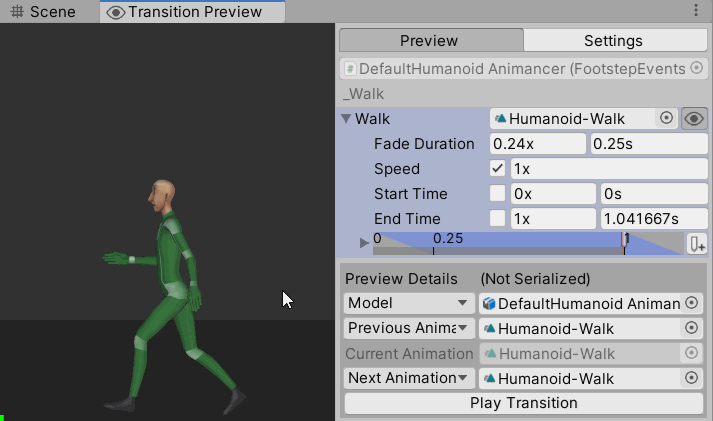
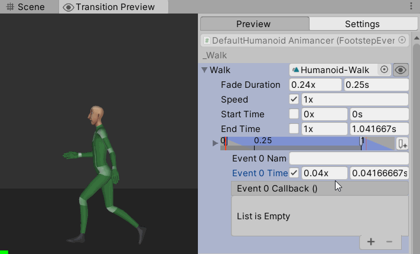

Difficulty: Beginner - Recommended after Quick Play
Location: Assets/Plugins/Animancer/Examples/05 Events/01 Footstep Events
Namespace:
Animancer.Examples.Events
 This example demonstrates how you can use Animancer Events and Animation Events to play a randomly chosen footstep sound whenever the character's foot touches the ground during a walk cycle. The Events page summarises the differences between the two systems which are further demonstrated by the Golf Events example.
This example demonstrates how you can use Animancer Events and Animation Events to play a randomly chosen footstep sound whenever the character's foot touches the ground during a walk cycle. The Events page summarises the differences between the two systems which are further demonstrated by the Golf Events example.
The actual example scene demonstrates both systems with one character each, playing a sound every time one of their feet touches the ground. But since the video shown here does not have sound, it instead shows a sphere around the foot associated with each event for a short time after that event occurs.
The 3D Game Kit example uses a similar system based on animation curves instead of events which also has different footstep sounds depending on the surface the character is standing on. An even more complex system could instead use Raycasts like in the Uneven Ground example to determine when a character's feet touch down. That would allow it to work for all animations without manually adding events to them all and could do things like calculating the desired volume based on the velocity of the foot and playing different sounds based on where each foot actually lands rather than the character's center.
The base FootstepEvents script is used to demonstrate Animancer Events and looks like this (with the comments removed since we're about to explain how it works):
using Animancer;
using UnityEngine;
public class FootstepEvents : MonoBehaviour
{
[SerializeField] private AnimancerComponent _Animancer;
[SerializeField] private ClipState.Transition _Walk;
[SerializeField] private AudioClip[] _Sounds;
protected void OnEnable()
{
_Animancer.Play(_Walk);
}
public void PlaySound(AudioSource source)
{
source.clip = _Sounds[Random.Range(0, _Sounds.Length)];
source.Play();
}
}
The FootstepEventsAnimation script inherits from FootstepEvents to demonstrate Animation Events instead and looks like this (with the comments removed since we're about to explain how it works):
using Animancer;
using UnityEngine;
public sealed class FootstepEventsAnimation : FootstepEvents
{
[SerializeField] private AudioSource[] _FootSources;
private void Footstep(int foot)
{
PlaySound(_FootSources[foot]);
}
}
Fields
| Code | Inspector |
|---|---|
The |
 |
Logic
On startup, we simply play the assigned animation:
protected void OnEnable()
{
_Animancer.Play(_Walk);
}
And then a PlaySound method which we will be calling using Animancer Events:
public void PlaySound(AudioSource source)
{
source.clip = _Sounds[Random.Range(0, _Sounds.Length)];
source.Play();
}
- It takes an
AudioSourceas a parameter so that each foot can play its sound from a different location. - Using only a single footstep sound every time feels repetitive for players, so instead we have a bunch of similar ones and pick a random one each time.
- Note that the minimum value in
Random.Rangeis inclusive (so it can pick 0) while the maximum value is exclusive (so it can not pick_Sounds.Length), which is perfect for picking a random element from an array.
Animancer Events
Using a Transition field gives us various additional controls in the Inspector which we would not have if we used a simple AnimationClip reference. In this case, we are interested in the preview button on the right so that we can see what the character will look like throughout the animation while we set up the Animancer Events:
Click the "Preview" button to open the Preview Window:

Click the "Add Event" button and adjust the time of the event. The Humanoid-Walk animation touches down at about 0.04x (normalized time):

Add a function to the callback:

Assign the
FootstepEventsscript as the target object:
Select its
PlaySoundmethod:
Since this is the event for the left foot, find the character's Left Foot object in the Hierarchy:

Add an
AudioSourcecomponent to the Left Foot:
Drag that
AudioSourceinto the parameter field for thePlaySoundmethod:
- Repeat steps 2-8 for the Right Foot which touches down at about 0.54x.
If we wanted to share these events in multiple places throughout the project, we could use a Transition Asset instead of a regular Transition.
Animation Events
Unity's Animation Events are built into AnimationClip assets rather than being added to a scene object in the Inspector. This affects several parts of the setup process which will be explained as we get to them.
Note that this setup process is exactly the same as it would be without Animancer.
Duplicate Animation
The first difference is the fact that we need to make a copy of the original Humanoid-Walk animation to add the events since we do not want them in any of the other examples which use that animation. This may not be a real problem in a proper project since you will likely use each animation for only one general purpose.
If your animation is imported as part of a model file (such as an .FBX), you can add animations using the Animations tab in its import settings as shown here:
One thing to note in this video is that the Average Velocity of the imported animation has some movement on the X axis even though we only want it to go straight forwards, so we can adjust the Root Transform Rotation Offset to straighten it out.

Otherwise if you have a separate .anim file you can simply select the original AnimationClip and use the Edit/Duplicate function (Ctrl + D) to make a copy of it then rename it as necessary.
Audio Source
Another difference is that since the AnimationClip is an asset, it cannot reference scene objects because an asset can be used in any scene so those particular objects may not exist. This means the event cannot directly reference the AudioSources that will be used to play each sound so we need to set it up differently:
- Create another script that Inherits from the
FootstepEventsscript.
public sealed class FootstepEventsAnimation : FootstepEvents
{
- Use an array to hold the
AudioSources:
// Element 0 will be the Left Foot.
// Element 1 will be the Right Foot.
[SerializeField] private AudioSource[] _FootSources;

- Add a method which takes an
intparameter to specify which foot and passes the associatedAudioSourceinto thePlaySoundmethod we Inherited fromFootstepEvents:
private void Footstep(int foot)
{
PlaySound(_FootSources[foot]);
}
}
This will be the method that the events call, using their Int Parameter to specify the associated foot since they cannot directly reference it.
Adding Events
If your animation is imported as part of a model file (such as an FBX), you can add animation events using the Events foldout in the Animations tab in its import settings:
| Left Foot | Right Foot |
|---|---|
| Put the first event just as the left foot touches down. Leave its Int Parameter at 0. | Put the second event just as the right foot touches down. Set its Int Parameter to 1. |
 |
 |
| Note that the frame numbers shown above are relative to the file rather than the start of the animation. It starts at frame 30, so 31 is actually the second frame. | |
Otherwise if you have a separate .anim file the process is much less convenient because you need to add events using the Animation window which is not automatically synchronised with the Inspector preview so you need to manually match the frame numbers:

When an Animation Event occurs, Unity searches through all scripts attached to the same object as the Animator to call any methods it finds with the specified function name, which is Footstep in this case. In the script we gave the method an int parameter, so Unity will pass in the Int value we set on the event (0 or 1 to indicate left or right).
Conclusion
The Animancer Events system is clearly superior for this particular example because it could be set up directly where we needed the events so they could directly reference the objects they interact with and did not require a duplicate of the AnimationClip, but that will not always be the case. You may encounter situations where Animation Events are more useful so it is important to understand all the tools you have available.